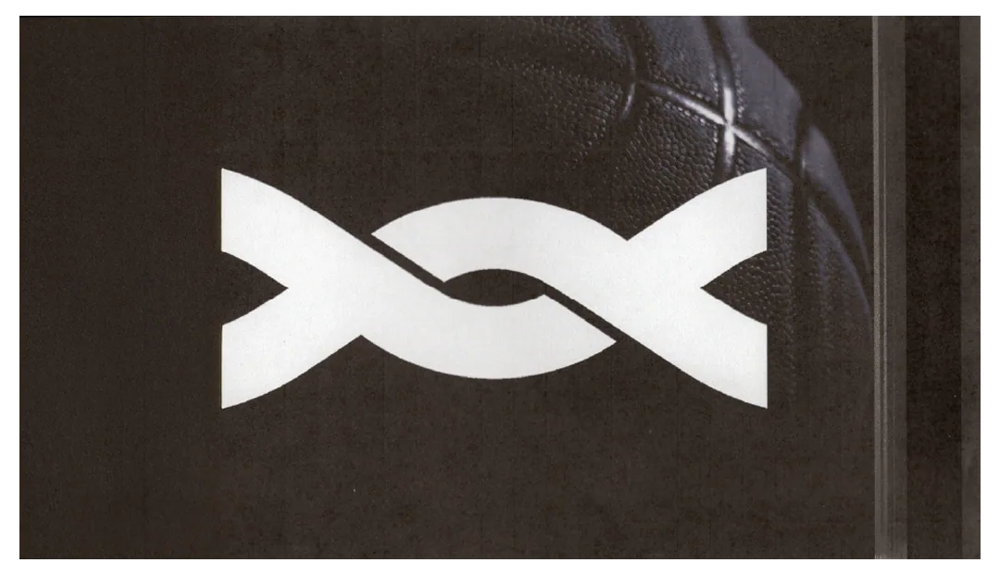
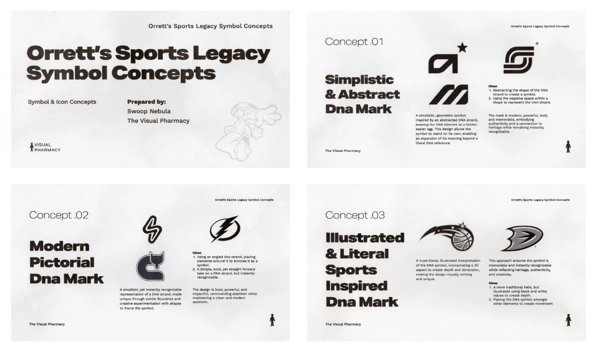
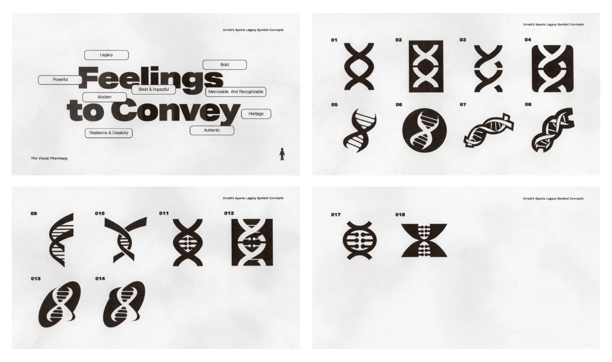
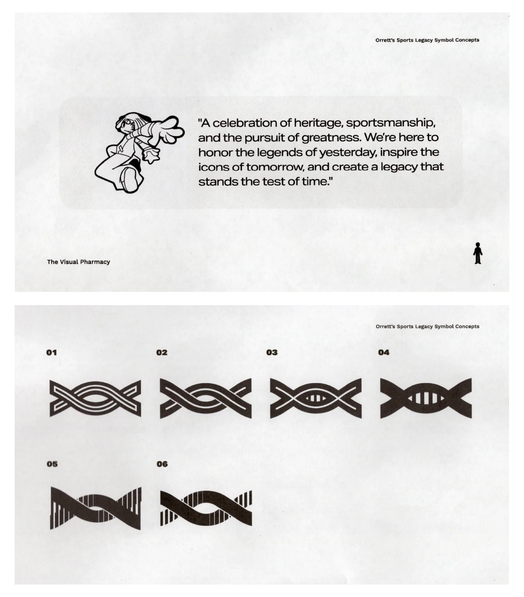
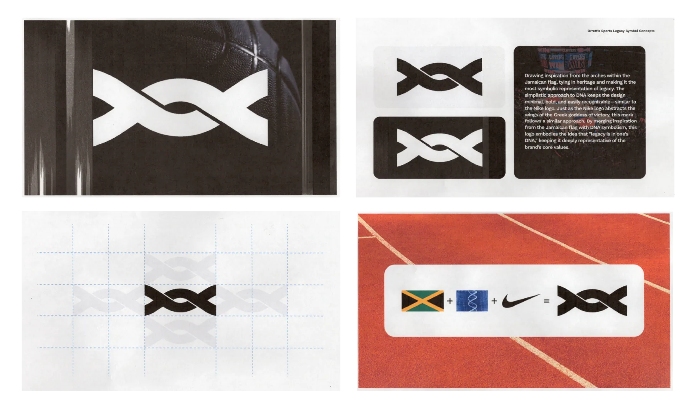

Orretts Sports Legacy
Working with Orretts, I designed a logo that would be used as the symbol for sports trading cards. They wanted something more aligned with the simplicity of the Nike logo—memorable and easy to draw. They also wanted it to resemble a DNA helix. I was reached out to by Christopher Strachan, who founded the non-profit Kickin’ It for a Cause. Kickin' It for a Cause provides basic necessities to systematically disadvantaged people all over the globe while offering the education needed for these individuals to excel in life. The organization supplies essentials like food, water, and footwear, while also educating people on complex topics such as mental and physical health, and environmental awareness. Christopher Strachan and Nick Drbal, the co-founders, reached out to me to create a symbol for their new venture, Orrett’s Sports Legacy—a brand focused on sports memorabilia.

Named after Christopher Strachan’s father, the company is a tribute to the values he instilled in Chris: hard work, pride in heritage, and a relentless pursuit of excellence. Orrett hailed from Jamaica, and the vibrant energy of the island, its colors, and its flag are at the heart of the brand. Christopher has a deep love for sports and memorabilia, a passion that has only deepened as his relationships have grown. His connection with Stephen Curry, one of the greatest athletes of our time, gave him a unique perspective on bridging the gap between sports legends and their fans. With an understanding of the brand, its goals, and its primary focus, I had my starting point. I began by creating three written concepts to better grasp what they envisioned. Using frequently mentioned keywords and terms, I developed three directions, varying in style and complexity, but all simple in their own right. After reviewing the provided concepts, Chris and Nick noted that they didn’t want the logo to be “basketball” or “ball” themed. Based on the feedback, we leaned more toward the modern pictorial DNA mark, which features a simple yet instantly recognizable representation of a DNA strand.

You can see those designs below. For numbers one through four, I kept things simple, focusing solely on geometric shapes to create a modern feel. For numbers five, six, thirteen, and fourteen, I took a more characteristic approach while ensuring the designs remained recognizable. Additionally, I brought in another designer to work on numbers seven and eight, bringing in a different perspective and giving Chris and Nick more options to consider. Chris mentioned that his favorites were 5, 7, 9, and 16, with 5 being his most favorite. He said, "I like the simplicity in 5 and 9, I like how it's easily traceable. I think you can clearly see the DNA aspect of it. 7 feels fun to look at, so it jumped out at me. I like how 9 was simple but different." However, after sitting with it for a few days, he wasn’t in love with it. “I’m really looking for something easily traceable and recognizable, like the Nike swoosh,” Chris noted.

With the feedback in mind and a deeper understanding of what Chris and Nick were envisioning, I sent through three new designs. They ended up choosing the direction below. Although they liked this option, they felt the logo still needed a bit more character. We hopped on a quick call to discuss ways we could make the logo more visually interesting.
Some ideas we discussed included using double lines within the shape, experimenting with line thickness, exploring the negative space within the logo, and trying different variations for the ends/edges of the logo.

After reviewing the revised concepts, Chris and Nick decided to go with the initial direction. The final logo is a play on the Jamaican flag, taking the paths from the top and bottom triangles of the flag, rounding out the peaks of both triangles, and intersecting them to create the helix. Just as the Nike logo abstracts the wings of the Greek goddess of victory, this mark follows a similar approach. By merging inspiration from the Jamaican flag with DNA symbolism, this logo embodies the idea that "legacy is in one's DNA," staying deeply representative of the brand's core values. Running the logo through the WIPO brand database, I found nothing resembling the logo—not even close. The logo feels familiar, but there’s nothing quite like it.

"Swoop, Thank you brother. We are so happy to work on more. Thanks for being diligently." - Nick Drbal
"Swoop, you bodied this! Preciate you my man! We are gonna take this thing global!" - Christopher Seezy